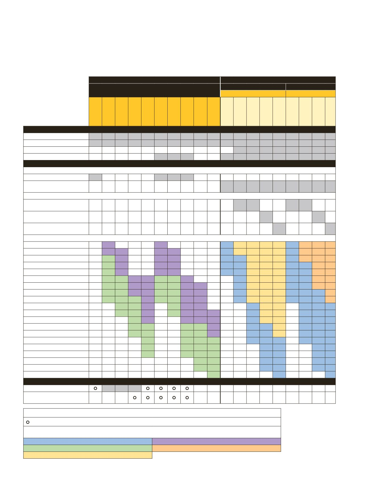

7250LP
7250xi
7252/7252i
PPC4
PPC4E
7250/7250i
*Die Gasdruck-Controller/Kalibrator-Kits
6241 und 6242 PPC4E umfassen die
PPC4E-Modelle und Zubehör und stellen
vollständige Systeme dar, die umfangrei-
che Kalibriermöglichkeiten abdecken.
Gasdruck-
kalibratoren
Niederdruck-Gasregler/
Kalibrator 7250LP
Spezialmessung und -steuerung für sehr
niedrigen berechneten Druckbereich.
•
Messgenauigkeit: 0,005 % des
Messwerts
•
Regelstabilität: 0,004% des jeweiligen
Bereichs
•
Auflösung bis 0,0001 in H
2
O
•
Bereichsendwerte von 0 bis 10 in H
2
O
(2,5 kPa) bis 0 bis 100 in H
2
O (25 kPa)
Gasdruckcontroller/Kalibrator
7250/7250i
Kombination von fortschrittlicher
Messgenauigkeit, Stabilität,
Geschwindigkeit und Erschwinglichkeit.
•
Druckbereiche von 0 bis 40 kPa und bis
21 MPa (0 bis 5 psi und bis 3.000 psi, 0
bis 400 mbar und bis 210 bar)
•
Das Modell 7250i bietet hohe
Genauigkeit mit einer Fehlergrenze von
0,005 % vom Messwert.
•
Modell 7250 liefert 0,003 % der
Genauigkeit des Bereichsendwerts
•
Stabilität: 0,0075 % des Messwerts
pro Jahr
•
Zeit bis Sollwert: <15 Sekunden ohne
Überschwingung
Hochleistungs-Gasdruckregler/-
kalibratoren 7250xi
Unerreichte Messgenauigkeit und
Geschwindigkeit.
•
Druckbereiche von 0 bis 40 kPa und bis
17 MPa (0 bis 5 psi und bis 2.500 psi,
0 bis 400 mbar und bis 170 bar)
•
Erhöhte Genauigkeit von 0,005 % vom
Messwert innerhalb von 5 % bis 100 %
des Bereichs
•
Stabilität: 0,0075 % vom Messwert
pro Jahr
•
Zeit bis Sollwert: <15 Sekunden ohne
Überschwingung
Gasdruckcontroller/Kalibrator mit
zwei Ausgängen 7252/7252i
Ein einzigartiger und flexibler Ansatz zur
Durchführung automatisierter Kalibrierun-
gen über einen breiten Druckbereich.
•
Zwei unabhängige Druckmess- und
Steuerungsmodule
•
Zwei leistungsstarke Modelle, 7252i
und 7252
•
Zeit bis Sollwert: <15 Sekunden ohne
Überschwingung
•
Bereichsendwerte von 0 bis 2,5 kPa
und bis 21 MPa (0 bis 0,36 psi und bis
3.000 psi)
Gasdruckregler/-kalibrator PPC4
Breiter Regelbereich und Flexibilität in
einem einzelnen Regler. Bereiche und
Messgenauigkeitsklassen können so aus-
gewählt werden, dass sie am Besten zu der
Anwendung passen.
•
Bis zu zwei interne Quarzreferenz-Druck-
wandler (Q-RPTs) von absolut (Vakuum)
bis 14 MPa (2.000 psi)
•
Full Scales Class Standard-Q-RPTs bieten
eine Messunsicherheit von 0,015 % vom
Bereichsende des ausgewählten Bereichs
•
Standard Class Q-RPTs bieten eine Mess-
unsicherheit von 0,01
% vom Messwert.
•
Premium Class Q-RPTs bieten eine
Messunsicherheit von 0,008
% vom
Messwert.
•
4-ppm-Regelgenauigkeit bis 1 kPa
(0,15 psia) mit großem Reduzierverhältnis
•
Kann mit Referenzdruckmonitor RPM4
als integrierte Ferndruckreferenzen für
zusätzliche Q-RPT-Bereiche verwendet
werden
Druckregler/Kalibrator PPC4E
Herausragende Bereichsabdeckung und
überlegene Zuverlässigkeit bei hohem Wert
für die alltägliche Druckkalibrierung.
•
Modelle für Messungen mit einer
Genauigkeit von 10:1 oder 100:1 sowie
Regelbereich-Turn-Down für maximale
Einsatzmöglichkeiten
•
Absolut-, Mess- und Zweiwege-Mess-
modi sind in den meisten Modellen
enthalten
•
Messunsicherheit ± 0,02 % des ausge-
wählten Bereichs, wobei Bereiche ab
± 1 kPa verfügbar sind (± 0,15 psi) bis
14 MPa (2.000 psi)
•
Absolutdruck von 1 kPa (0,15 psi) bis
14 MPa (2.000 psi)
30
Druckkalibrierung